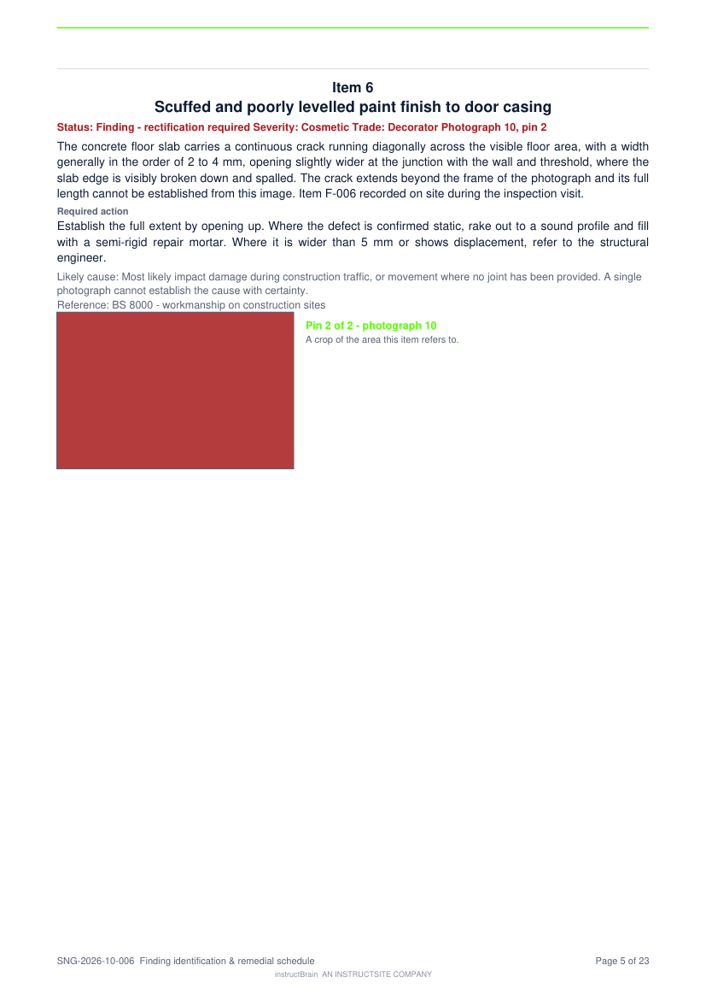

This is the real renderer's output — not a mock-up. It is the report
module from the instructBrain codebase, rendering the content of SNG‑2026‑10‑006,
committed as 6637b5b.
Page 2 — the schedule of items. Every item, once, with its title, trade,
severity, and the photograph and pin it refers to.

Page 5 — an item. The one-line title as the headline, the chips beneath it,
then the record, with the crop and its pin.
What changed
The photograph can no longer tear off its itemThe crop reserved 148 points of space but only ever consumed 140. In the
eight points between the two, an item measured as fitting and its photograph was still pushed to
the next page — landing above the following item's heading. That is what put item 11's
cracked tile above “Item 19”.
The title is the headlineEvery finding already carried a one-line title. It was printed as one more line
of body text below the chips, or not at all. It now heads the item.
The schedule of itemsThere was no contents page. Finding “item 5” meant reading
twenty-two pages.
Section bands, with countsThree plain headings over twenty-two pages became navy bands carrying the
number of items in each.
The pin, in words“Photograph 6, pin 1” on the item and in the schedule, so a pin can
be traced without hunting for the plate.
Branding, verified on the artifactThe cover band, the section bands and the schedule all carry the fixed
instructBrain navy, white “instruct” and Laser Green “Brain”, with the
green rule and the credit on every page. Never an organisation override.
What deliberately did not change
The order of the sections. The severity scales run in both directions across the
product's definitions — snagging is declared cosmetic‑first, while site walk, electrical,
mechanical, fit‑out and damp are all declared most‑serious‑first. So
“worst first” is a property of each definition, not something the renderer may infer.
A uniform reversal was written, measured to reorder five of the seven the wrong way, and backed out.
A test now holds the printed order to the declared order.
The prose on the pages shown is filler from the test fixture, not the report's real finding text —
the layout is what is being shown. The item titles, trades, severities and pin references are real.
Not live yet. A push syncs the code into the Lovable editor. The live site and the PDFs it
generates do not change until Publish → Update is pressed. Report SNG‑2026‑10‑006
was issued as version 1 under the old layout; it keeps that frozen version, and a new version
would carry this one.